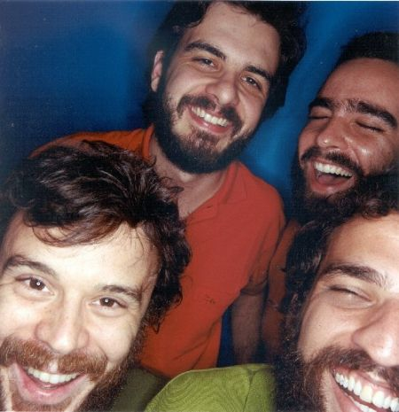
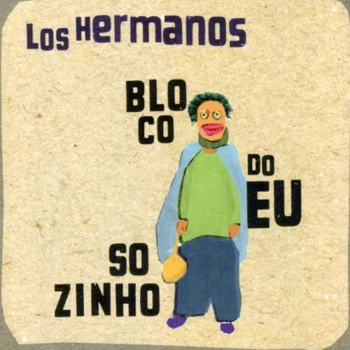

Sentimental - Los Hermanos
Segundo single extraído do álbum Bloco do Eu Sozinho, “Sentimental” é a segunda música assinada pelo vocalista Rodrigo Amarante a ser considerada faixa de trabalho. A primeira foi “Quem Sabe”, do álbum de estreia Los Hermanos, de 1999.
A canção se refere a um relacionamento que foi se desgastando, até perder todo o sentido do resto e se resultar num abismo sem fim.O sentimentalismo sempre foi algo forte na música do Los Hermanos. Mesmo no começo, quando a banda ainda tinha um som mais pesado, voltado para o hardcore, as letras profundas já estavam presentes.
Não só pelo nome, mas pela letra e melodia, Sentimental é praticamente um retrato da banda.
Eu encontrei quando não quis
Mais procurar o meu amor
E quanto levou foi pra eu merecer
Antes um mês e eu já não sei
E até quem me vê lendo o jornal
Na fila do pão, sabe que eu te encontrei
E ninguém dirá que é tarde demais
Que é tão diferente assim
Do nosso amor a gente é que sabe, pequena
Ah, vai
Me diz o que é o sufoco
Que eu te mostro alguém
A fim de te acompanhar
E se o caso for de ir à praia
Eu levo essa casa numa sacola
Eu encontrei e quis duvidar
Tanto clichê, deve não ser
Você me falou pra eu não me preocupar
Ter fé e ver coragem no amor
E só de te ver, eu penso em trocar
A minha TV, num jeito de te levar
A qualquer lugar que você queira
E ir aonde o vento for
Que pra nós dois
Sair de casa já é se aventurar
Ah, ah vai
Me diz o que é o sossego
Que eu te mostro alguém
A fim de te acompanhar
E se o tempo for te levar
Eu sigo essa hora e pego carona
Pra te acompanhar

Marcelo Camelo: voz e guitarra, baixo em "Deixa o Verão", arranjo de metais
Rodrigo Amarante: voz e guitarra, baixo em "Conversa de Botas Batidas", arranjo de metais
Rodrigo Barba: bateria
Bruno Medina: teclados e piano
Em suas entrevistas e shows nota-se o compromisso e o prazer que a banda tem em simplesmente estar
junta e poder passar seu recado sem nenhuma pretensão de ser considerada pelo suposto mercado, pelos modismos ou
por
algum padrão de sucesso imposto simplesmente visando a vendagem, o lucro ou a ostentação. Los Hermanos é mais
que uma
banda de rock: é uma banda de música.
Mais que uma banda de música, são artistas. Muito além de artistas, são pessoas. Gente como qualquer outra,
porém com
um propósito, muito além de apenas “ganhar a vida” ou “fazer dinheiro”, desejam dar seu recado. E ouvindo suas
músicas
com atenção e com o coração aberto, tenho a impressão de que o recado que eles passam é: “Los Hermanos não somos
nós
(a banda), e sim você, que está nos ouvindo. Ou melhor, somos todos nós. Irmãos. Juntos. No mesmo barco”.